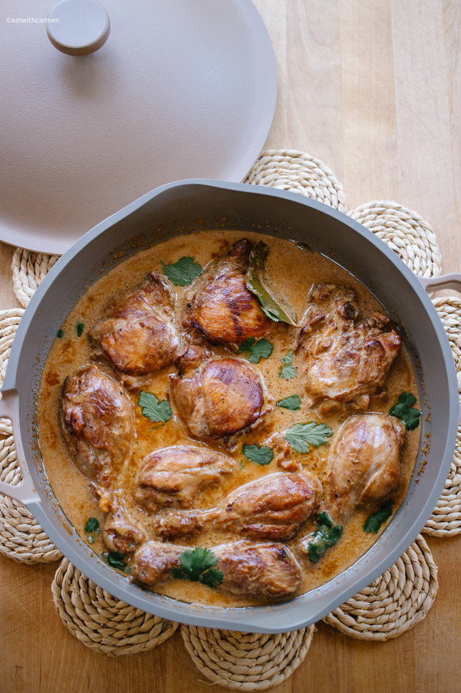

Coconut Adobo

Description
This is one of my all-time favorites. It's affordable, simple, and
pretty easy to make. The sauce is creamy and tangy, and the chicken
falls right off the bone. I like to make it in big batches so I have
leftovers for the whole week.
Ingredients
- 4 bone-in chicken leg quarters
- 6 cloves garlic, sliced thin
- 1 large yellow onion, diced
- 1 13.5oz can coconut milk
- 1 13.5oz can unsweetened coconut cream
- 6 bay leaves
- Distilled white vinegar
- Soy sauce
Steps
- Separate chicken leg quarters into drums and thighs.
- Heat 1 tsp neutral oil in a saute pan or dutch oven. Brown drums and thighs on high heat.
- Once the chicken skin is crispy, add onion and garlic to the pan and turn heat to medium.
- Once onions start to turn transparent, add a splash of vinegar to deglaze the pan.
- Add coconut milk, coconut cream, bay leaves and a splash of soy sauce. Cover and simmer on low for 30 minutes.
- Remove bay leaves and adjust taste with soy sauce and vinegar.
- Serve over rice.